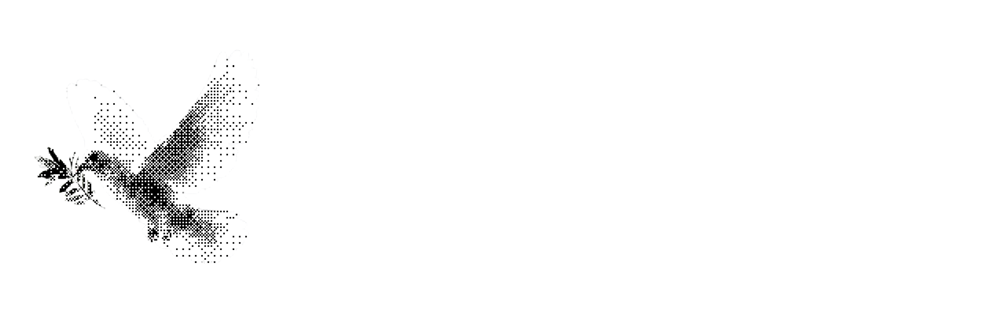

Three fronts for the Alliance for Peacebuilding event, each shown with the back. The back is the same on all three so the comparison stays on the front; it picks up the chosen front's motif once we pick one. Cards are built at true print size in inches and points. Turn on print guides to see the 0.125in bleed (shaded), trim (magenta), and safe area (dashed cyan).
The Footnote
The headline states what the field knows and carries a citation chip, the same tier-1 chip the product uses. The footnote delivers the problem and names Peace Intel. It explains itself on a table and gives an evidence-minded crowd a small joke to notice. Front in the dark theme, so it stands apart from the light sponsor pieces around it and the flip to the light back feels deliberate.

Launching January 2027We know a great deal about how wars are prevented, managed, and ended.1
1Most of it is scattered across datasets, evaluations, and reports that are hard, and sometimes impossible, to reach. Peace Intel brings it together and traces every answer to its source.
The Dove
The dithered dove from the hero clip, rebuilt as 1-bit art at print resolution, which is the most reliable thing a toner press reproduces. Most likely to get picked up; the back does more of the explaining. The headline is the team's ambition line.
The accumulated intelligence of the peacebuilding field, at your fingertips.
Research, evaluations, and conflict data in one place, with every answer traced to its source.

The Question
The composer from the app with a real practitioner question typed in, and the four things you get back underneath. It shows how the product works without a screenshot. The risk is that a chat box alone looks like every AI tool; the four answer chips are what set it apart.
Ask the field.
What has helped local ceasefires hold, and under what conditions?